Google Trends - R/GA Signage
07/2016 _ New York
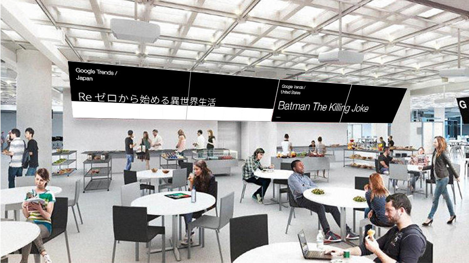
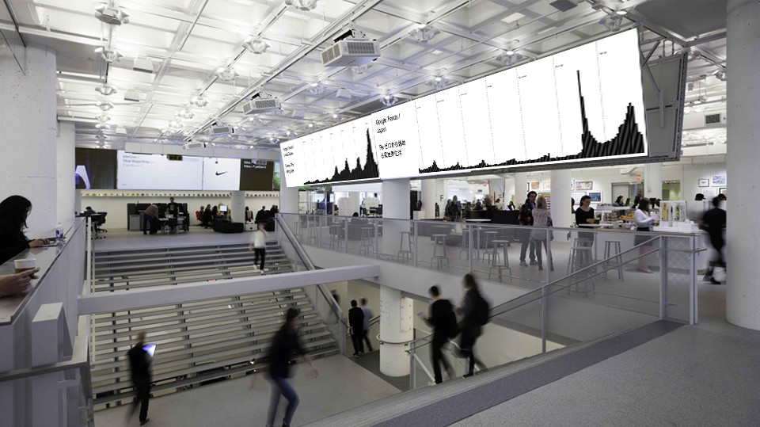
What does the term “connected workplace” mean?
The idea of this data visualization animation was entailed by the concept “connected workplace” of which R/GA used to feature it’s new New York office in 2016.
The goal of this data visualization animation is to leverage the term “connected” beyond the efficient interaction among stuffs within the physical space of the office, and raise it to the extent that the ubiquitous exchange of digital information among R/GA offices in diverse locations and the outside world could happen all at once.
As one out of several projects for “office signage” which is essentially a digital interior design for the office itself (as shown in the images above, the signages are several huge screens hanging above the floor with a dimension of 1260*960), this data visualization animation informed the stuffs working inside R/GA's New York office of the news currencies of the others in a timely manner. It scraped the live data from
Google Trends and featured the trending search term of the day for each R/GA office in a form of three javasctipt animated frames.
frame 1 :
engaging "typing" animation to show the regional top trending search term of the day from google trends
frame 2 :
using animated bar charts to display the change of the search popularity of today's top search term over the past week
frame 3 :
providing higher resolution for the popularity of the top search term by a geographical breakdown through choropleth.
the complete transition :
snapshots of the final visuals on a day in July 2016
for 9 Countries that R/GA has office(s) in:
[Japan]
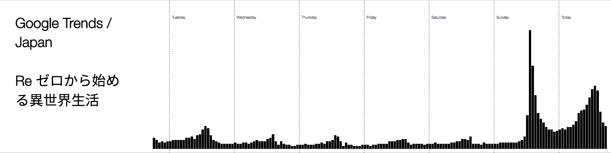
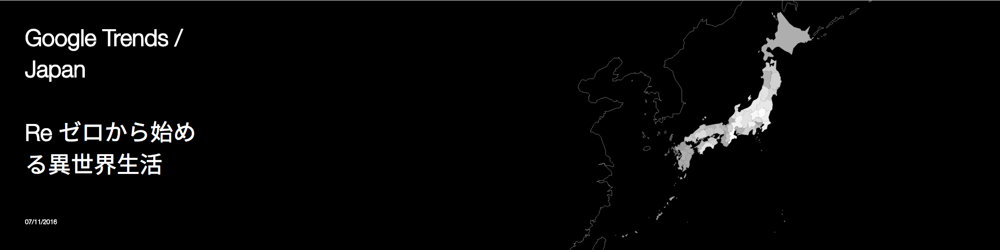
[U.K.]
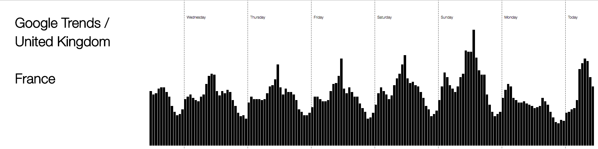
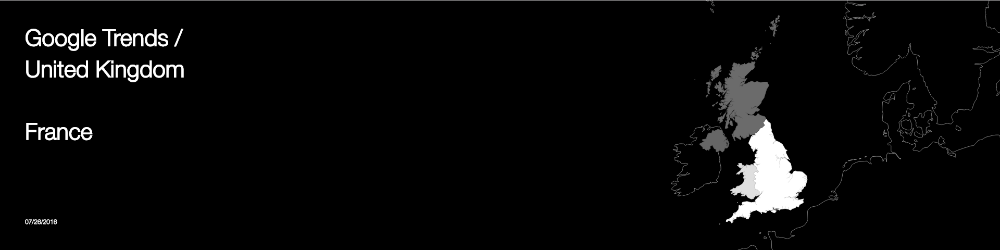
[U.S.]
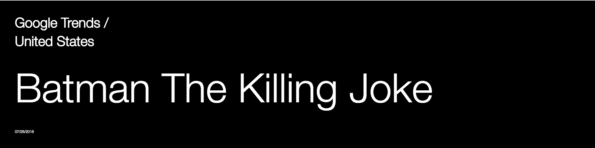
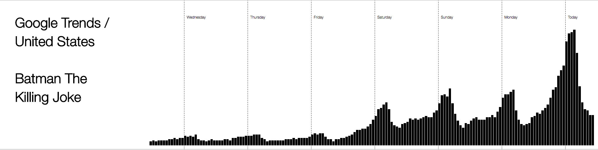
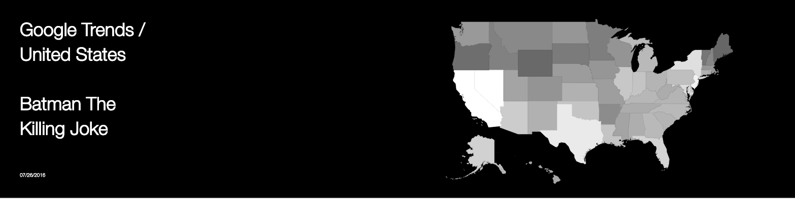
[Austrilia]
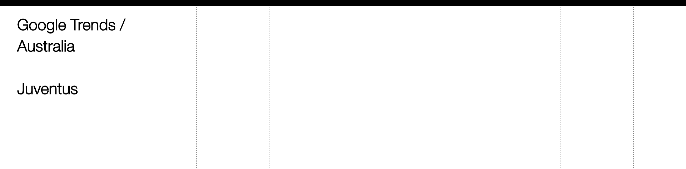
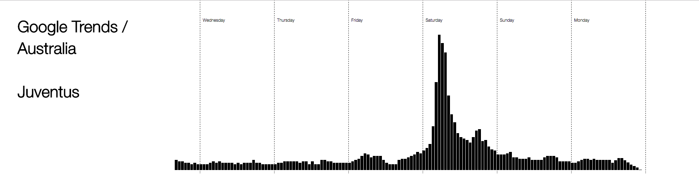
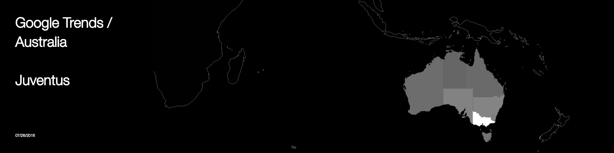
[Brazil]
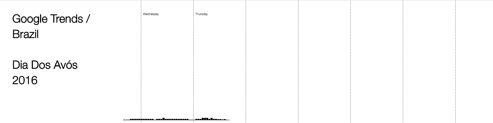
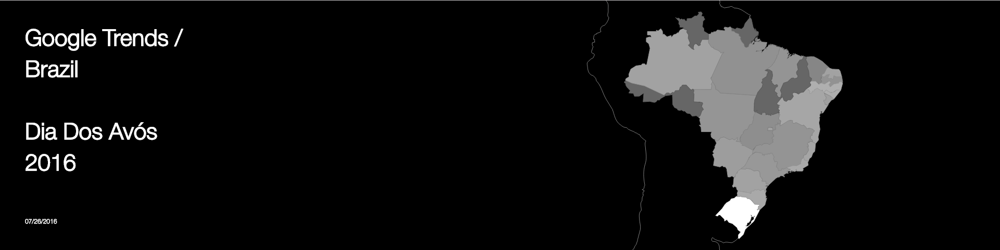
[Singapore]
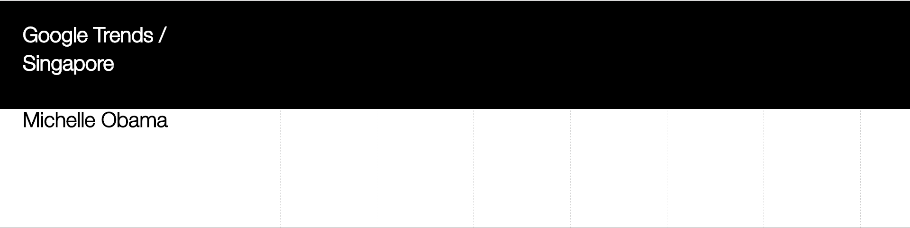
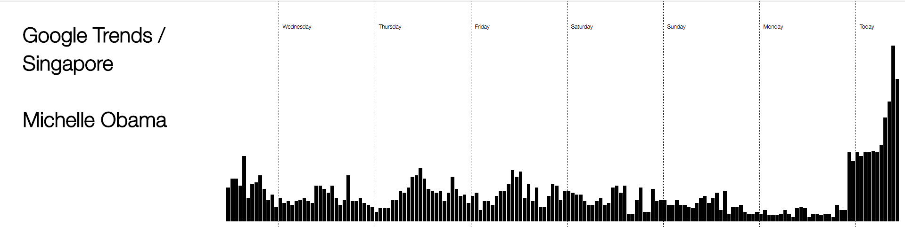
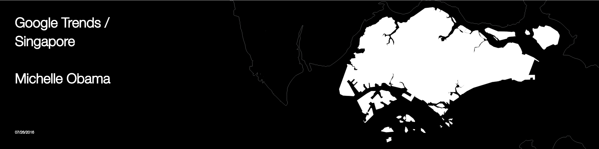
[Turkey]
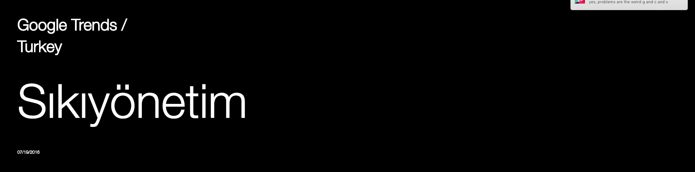
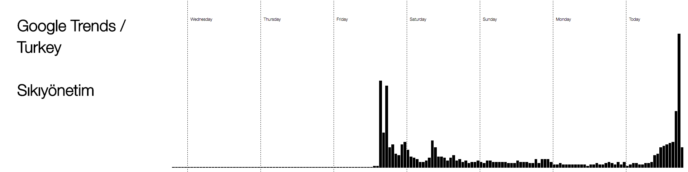
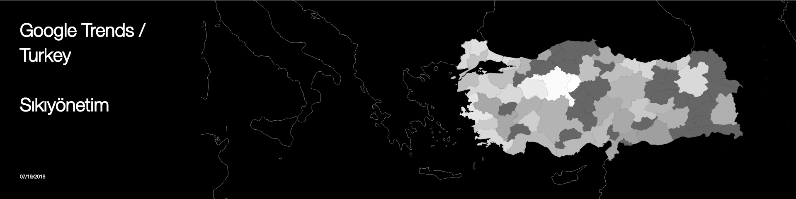
[Romania]
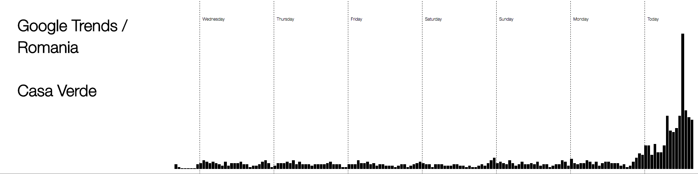
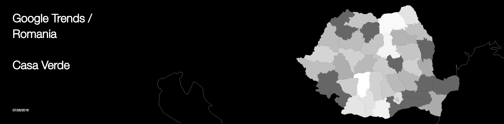
[Argentina]
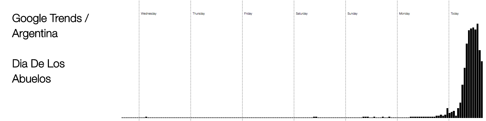
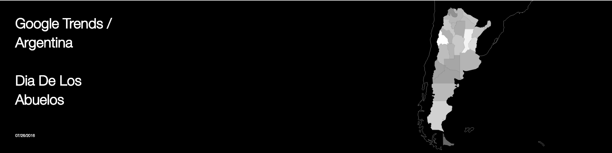
_ development tools:
jQuery, TweenMax, typed.js, google charts api, css/scss
_ thanks and credits to:
[Hang doc-thi duc] for the teamwork
and
[Yuki Nakamura] for the visual tweaks
and
[data science and visualization department of R/GA] for supporting the whole project